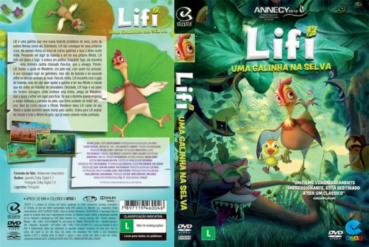

Outro Título:마당을 나온 암탉
País:South Korea, 93 minutos
Idiomas falados:Japonês, Português
Gênero(s):Animação, Família, Aventura, Drama
Diretor(s):Oh Sung-yoon
Escritor(es):Hwang Seon-mi, Hyeon Nam-seok, Kim Eun-jeong, Na Hyun
Codec:MPEG-2 (DVD)
Número: 5784


Certificado:
Sinopse:
Lifi é uma galinha que vive em uma fazenda produtora de ovos, junto de dezenas de outras fêmeas como ela. Entretanto, Leafie não consegue ter seus próprios ovos, ela apenas choca os ovos de outras galinhas e isso a deixa muito triste. Em meio a sua fuga do galinheiro, ela acaba sendo responsável por chocar e criar um filhote de pato órfão, que perdeu os pais para uma doninha caolha.
Elenco:


Tipo de mídia: DVD5,
Legendas: Português, Sem Legendas
Alugado: Não
Tela: Anamorphic Widescreen